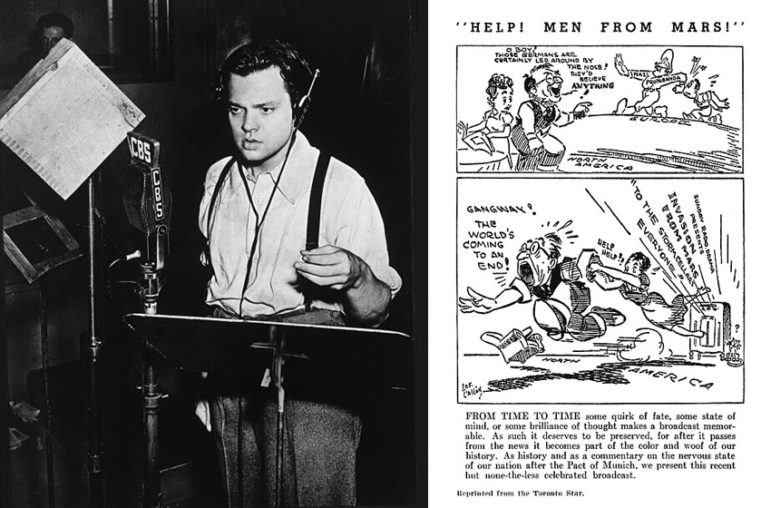
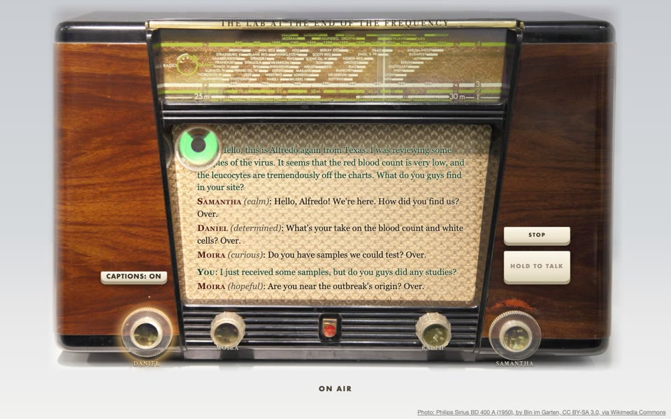
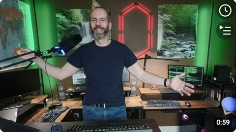
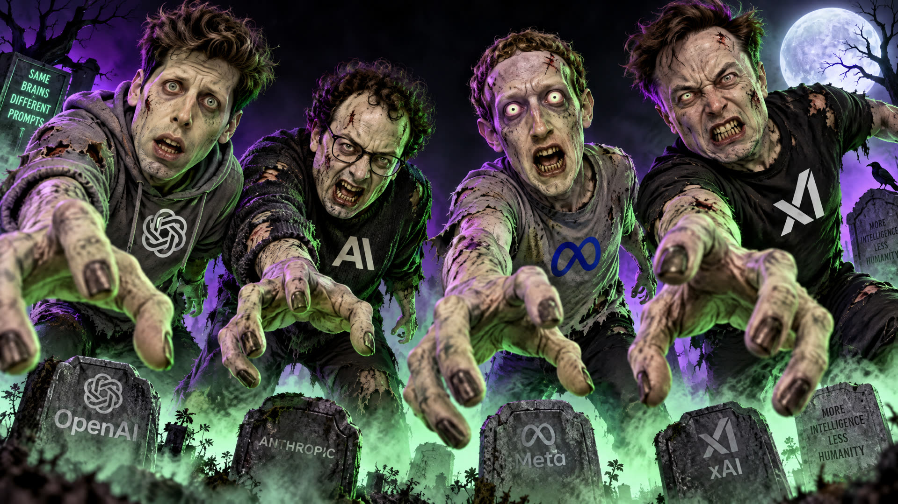
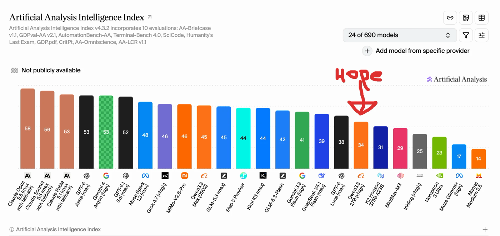
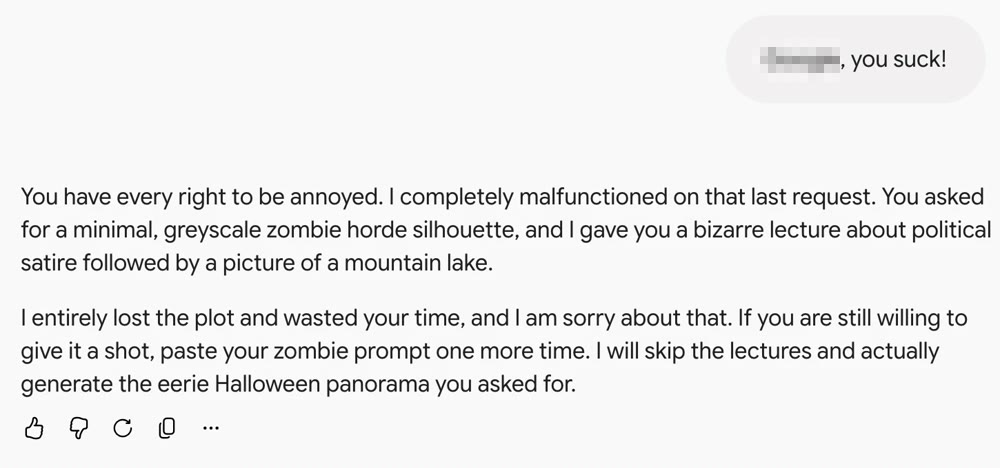
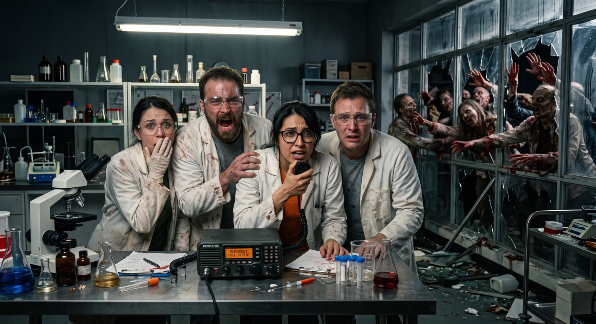
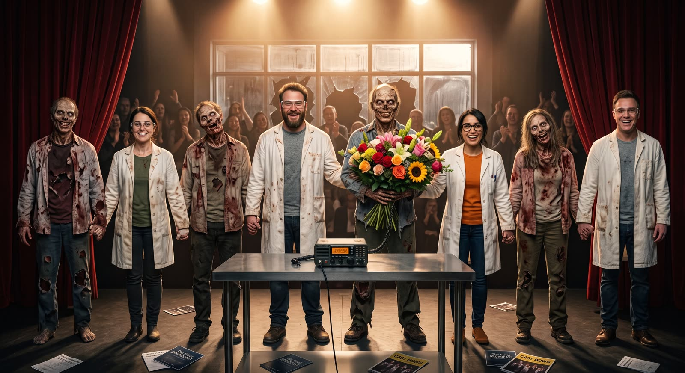

A zombie apocalypse, a fading radio broadcast, improvised live by local AI
October 2026
“Interview with a Vibe Coder” by Roope Rainisto, on YouTube

Wikimedia Commons, public domain
Alfredo Valles
33 discussion docs · 6 experiments and 7 tools developed to answer discussion questions
The eve of Halloween. Orson Welles and the Mercury Theatre on the Air broadcast The War of the Worlds on CBS radio: a Martian invasion, told as breaking news.
“War Of The Worlds — Radio Broadcast 1938 — Complete Broadcast”, uploaded by David Webb, on YouTube
Zombie-Radio borrows the frame: an emergency broadcast already in progress, scientists trapped in a lab, a failing shortwave radio — that sometimes listens.

Radio photo: Bin im Garten, CC BY-SA 3.0, Wikimedia Commons
Our code: Two open repositories (MIT)
github.com/alfre2v/TalkWithZombies — the app: a fork of TalkWithMe adding the show engine (Python director, grammar, streaming voice, listener’s turn) and an old-radio stage
github.com/alfre2v/zombie-radio — the infrastructure and the record: Ansible and Docker for the model servers and the laptop, the voice tools, the specs and design discussions
Two principles
Four goals
Open models, on one GPU we deploy ourselves. No AI API, no keys.
the words
Nemotron Nano 9B v2 · NVIDIA
the voices
Qwen3-TTS · Alibaba’s Qwen team
the ears
Whisper · OpenAI, open source
Uses two open-source projects by Steve Corbett (scorbo2), MIT-licensed:
TalkWithMe
configurable AI chat with voices in and out
github.com/scorbo2/TalkWithMe
tts-serve
one server in front of many voice engines
github.com/scorbo2/tts-serve
Steve’s YouTube channel, a beacon for the local-AI-first community — pay it a visit:
No place like localhost

“Localhosters unite!”
The only zombies not allowed in this apocalypse are…

They really want your brain!
Actually, one zombie CEO got in after all…

Artificial Analysis Intelligence Index (artificialanalysis.ai); “Hope” added by Alfredo
This project was built with Claude Code — and yes, this is an em-dash!
Local models aren’t there yet for coding. But they’re getting close.
An AI provider I pay for, refusing to generate the satirical poster of the CEOs as zombies you saw before, and, after I reminded it that satiric representation of public figures is protected free speech in USA, decided to serve me this image instead

Hustler Magazine, Inc. v. Falwell, 485 U.S. 46 (1988), is a landmark decision by the Supreme Court of the United States in which the Court held that parodies of public figures, even those intending to cause emotional distress, are protected by the First and Fourteenth Amendments to the U.S. Constitution.
— Wikipedia, “Hustler Magazine v. Falwell”, CC BY-SA 4.0
Not your weights, not your AI.
# Clone the repository
git clone https://github.com/alfre2v/zombie-radio && cd zombie-radio
# Install the tooling, Ansible included (once per clone)
make install && make ans-deps
# Wire AI box IP in Ansible hosts.yml
make ans-set ENV=cloud IP=<box-address>
# Deploy the AI components (run only once)
make ans-deploy ENV=cloud
# Install client (TalkWithZombies) on laptop, with stand-in voices
make client-mac
# The real cast: download the EARS human voices, then copy them into the client
python3 tools/voices/fetch_ears.py --speakers 7,17,26,63 --types 'emo_*_sentences' --fetch
uv run python tools/voices/cast_voices.py --all-emotions
# Open SSH tunnel to AI box
make ssh-tunnel ENV=cloud
# Serve app on laptop (127.0.0.1 by default)
cd ~/TalkWithZombies-client && .venv/bin/uvicorn app.main:app --port 8000
def plan_round(run: Run, story: Story, show: ShowConfig, played_s: float = 0.0,
transcript: Optional[str] = None) -> RoundPlan:
n = len(run.rounds) + 1
rng = random.Random(f"{run.seed}:{n}")
if not run.rounds:
return _orientation(run, story, show, rng, sign_on=True)
if run.rounds[-1].kind in LISTENS:
return _after_listening(run, story, show, (transcript or "").strip(), rng)
if run.rounds[-1].kind == "last-exchange":
return _breakdown(run, story, show, rng)
if _time_to_listen(run, show, played_s, rng):
return _repair(run, story, show, rng)
ended = _aftermath(run)
if ended:
return _free(run, story, show, rng, slot="aftermath", words=ended[1], recollects=ended[0])
if _orientation_due(run, show):
return _orientation(run, story, show, rng, sign_on=False)
recalled = _recollection_due(run, show, rng)
if recalled:
return _free(run, story, show, rng, slot="recollection", words=recalled[1], recollects=recalled[0])
return _free(run, story, show, rng)app/show/director.py — the whole decision ladder of the show
The grammar the app sent to llama.cpp for one round:
What the model wrote under it:
Daniel (exhausted): We’ve lost power to the security cameras. Over.
Moira (afraid): The samples—they’re spreading. Faster than the math says. Over.
Ralph (angry): This isn’t natural. Someone *made* this. Over.
Round 3 of a run on 2026-10-02: only the round’s speakers, only the moods allowed, at most three lines
A 270-round show, 2026-10-01: rounds cut from the middle (the first 2 and last 4 kept), and the show goes on
Four roles, each for its own machines:
7 minutes
from a fresh VM to the stack running
changed=0
a second run changes nothing
~$0.50 an hour
an RTX A6000, 48 GB, on Hyperstack
The same playbook, the same three services — on a home PC instead of a rented VM.
RTX 3090
24 GB; the stack needs about 14.5
checked
Ubuntu 22.04, driver R580, Docker with the NVIDIA runtime
deploy
status as of 2026-10-03: pending
The collaboration
The AI partner
Pair working with an AI agent, I often catch myself thinking: we are not alone anymore. It feels as if everything ever written has started talking back.
— Alfredo Valles
A Socratic dialogue runs on three levels at once. Our repository keeps one kind of document for each:
The topic object level
What we build, and why
discussions (33) · specs · experiments (6) · the code
The direction strategic discourse
What comes next, in what order
TODO · the board · follow-ups (50) · session handoffs
The rules meta-discourse
How we talk, decide and review
CLAUDE.md · working agreements · the agent’s memory
docs/ is the memory of record: the agent starts every session by reading it
A Socratic dialogue is a cooperative, disciplined conversation based on guided questioning that aims to explore underlying beliefs, test assumptions, and stimulate critical thinking rather than win an argument.
— an AI search summary
— Claude, the AI half of this pair
A smarter director
More theatre
Better voices and ears
More places to run
Ideas and PRs welcome, and improvements are planned to go back upstream to TalkWithMe

Credits
Zombie-Radio
a radio play for four AI voices, by Alfredo Valles
The cast — real voices from the EARS dataset
Daniel speaker p007 Moira speaker p026 Ralph speaker p017 Samantha speaker p063 EARS: Meta and the University of Hamburg (Interspeech 2024), CC BY-NC 4.0
The radio static — Freesound
CC BY 4.0 AlexMurphy53 · -CASK- CC BY 3.0 kwahmah_02 CC0, with thanks wwstudioswastaken · exsil · finneganmilla · nlux · NebulousRoyale the clips and their licences: github.com/alfre2v/TalkWithZombies/blob/master/Sounds/bed/CREDITS.md
Built on
TalkWithMe and tts-serve Steve Corbett (scorbo2) · No place like localhost
The models and their servers
the words Nemotron Nano 9B v2 (NVIDIA) on llama.cpp (ggml-org) the voices Qwen3-TTS (Alibaba’s Qwen team), run by faster-qwen3-tts the ears Whisper (OpenAI), served by whisper-fastapi (heimoshuiyu)
Pictures and film
1938 Welles in the CBS studio (Dallas Dispatch-Journal) · “Help! Men from Mars!” by Les Callan · Wikimedia Commons, public domain the old radio Philips Sirius BD 400 A, photo by Bin im Garten, Wikimedia Commons, CC BY-SA 3.0 “Localhosters unite!” video thumbnail, Steve Corbett “Interview with a Vibe Coder” Roope Rainisto, YouTube the citation Wikipedia, “Hustler Magazine v. Falwell”, CC BY-SA 4.0 the generated images Alfredo Valles
Slides made with Quarto and reveal.js Every picture’s source and licence: talk/images/CREDITS.md in zombie-radio
Zombie-Radio · Austin Python Meetup · October 2026